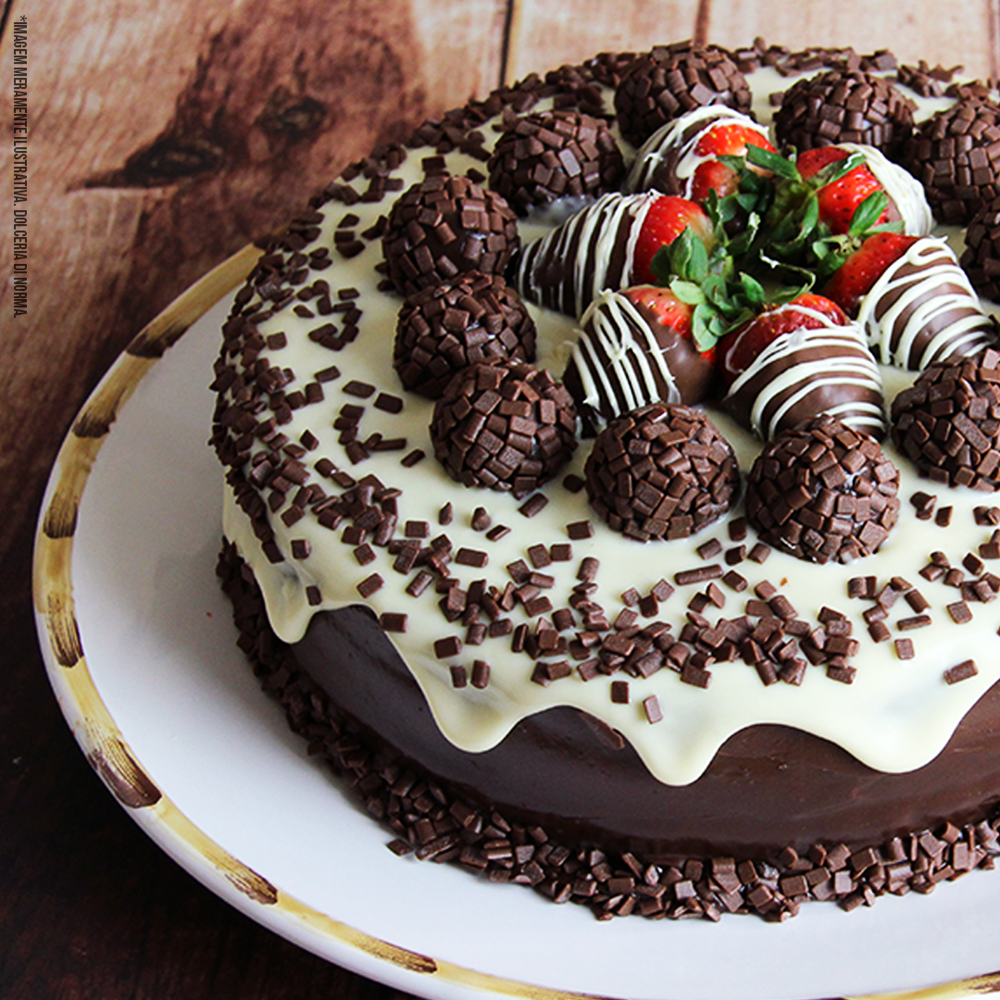
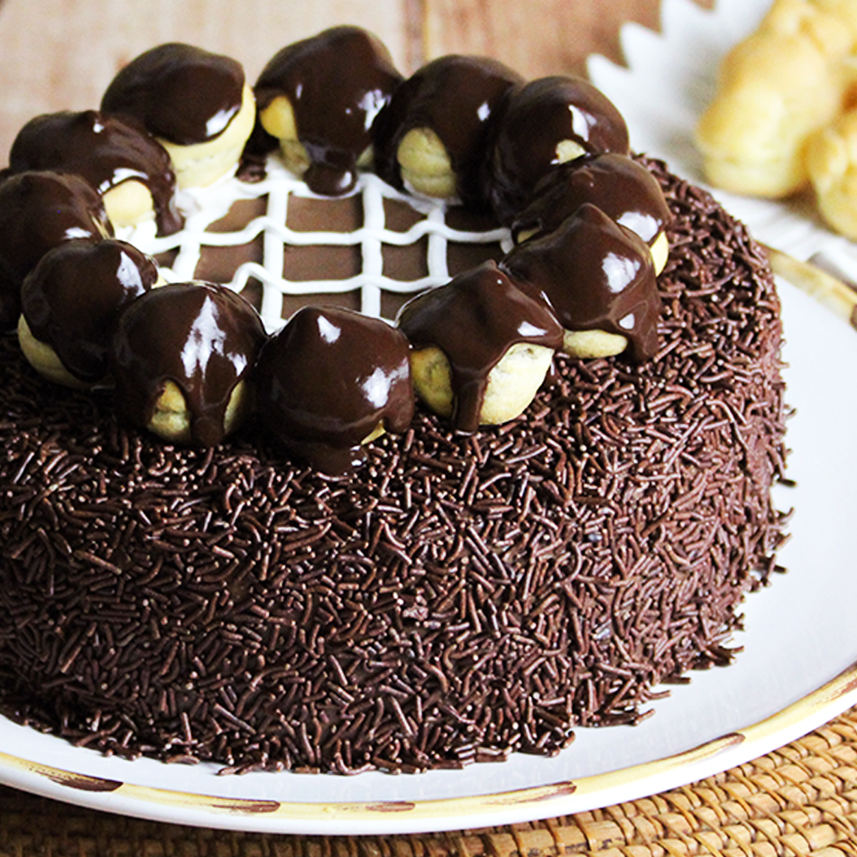
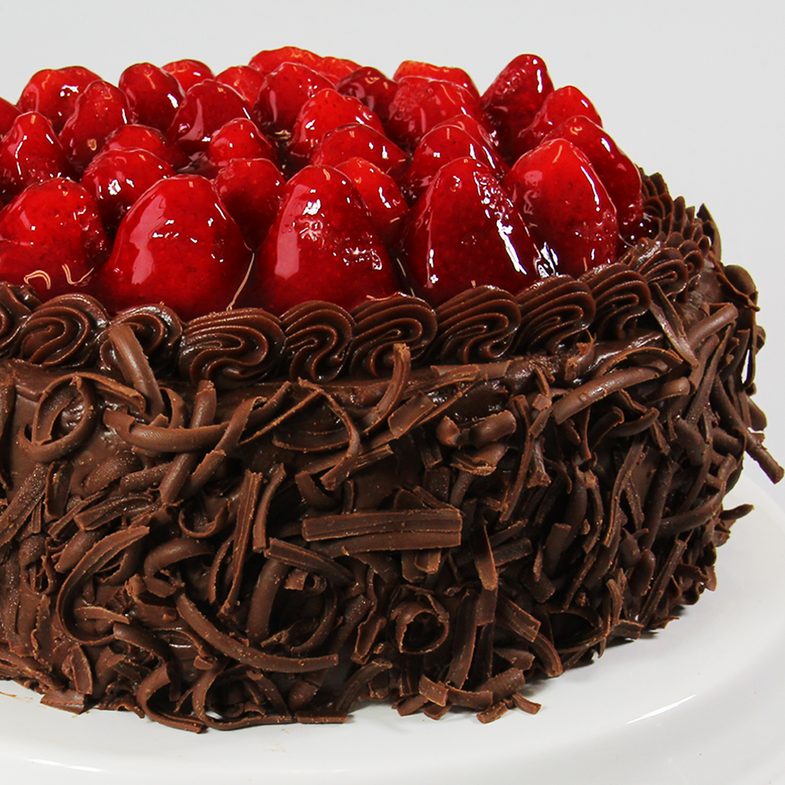
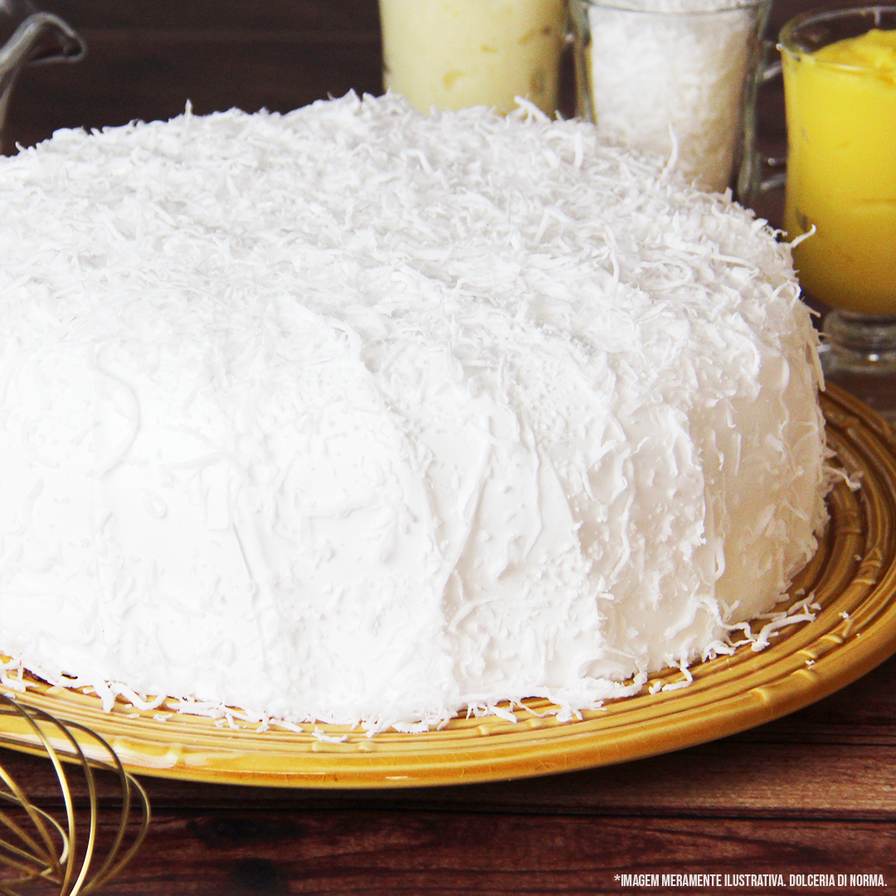
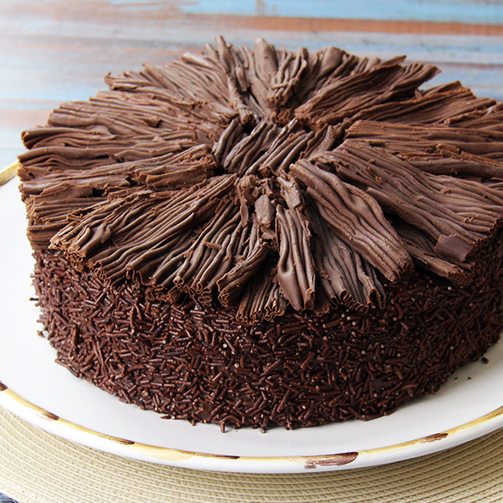

Bolo Black Cake

Massa “dark chocolate” recheada de mousse Alpino e Sinhá Benta. Para melhorar, O Black Cake ainda é coberto com pedaços de brownie banhados ao chocolate.!
Bolo Amor de Morango
Delicioso bolo de chocolate com duplo recheios de brigadeiro tradicional e leite ninho com morango. Coberto com ganache de chocolate amargo, creme de leite ninho, brigadeiros e morangos frescos banhados no chocolate!
Bolo Profiteroles
Bolo de chocolate delicioso recheado com delicioso brigadeiro, coberto com granulados e profiteroles.
Bolo Morango Trunfado
Bolo de chocolate molhadinho recheado de creme de chocolate e pedaços crocantes de chocolate branco. Cobertura de chocolate e morangos frescos. Experimente O Bolo Morango Trufado e apaixone-se!
Bolo Bruna
Bolo de baunilha e bolo de chocolate recheado com baba de moça e doce de leite. Cobertura de marshmallow e flocos de coco!
Bolo Brigadeiro
olo Brigadeiro é um bolo fofinho de chocolate, recheado e coberto com puro brigadeiro e lascas de chocolate ao leite.
Bolo Black Cake
Massa “dark chocolate” recheada de mousse Alpino e Sinhá Benta. Para melhorar, O Black Cake ainda é coberto com pedaços de brownie banhados ao chocolate.!